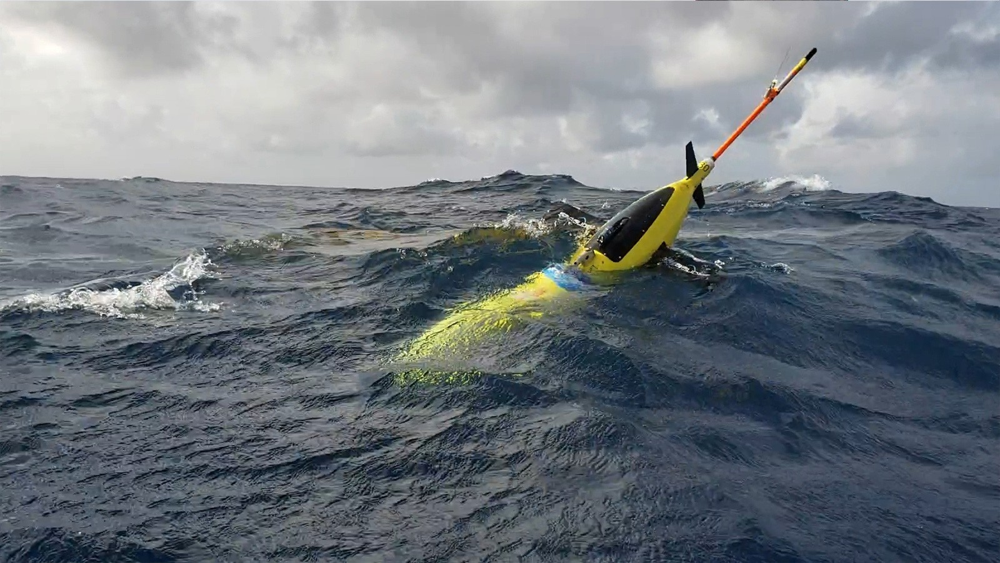

NOAA's Saildrone Observations of Atlantic Hurricanes for Improved Intensity Forecasts
Improving the accuracy and ultimate value of NOAA's operational hurricane forecasts requires more complete real-time knowledge of atmospheric and oceanic conditions and more realistic representation of key physical processes in hurricane forecast models. To meet these needs, a research team from NOAA's Pacific Marine Environmental Laboratory (PMEL) and Atlantic Oceanographic and Meteorological Laboratory (AOML) are deploying saildrones (see picture below) to observe conditions near the ocean surface during Atlantic hurricane seasons.

Objectives
(1) Measure near-surface atmospheric and upper-ocean parameters to calculate energy and momentum fluxes between the atmosphere and ocean outside and within hurricanes.
(2) Synchronize observations from saildrones, ocean gliders (see picture below), and air-deployed instruments and drones to measure the coupling between the atmosphere and upper ocean.
(3) Transmit data in real-time to operational weather prediction centers to improve atmosphere-ocean initial conditions in forecast models.
(4) Apply the observations to understand how air-sea interaction affects hurricane intensity and to advance hurricane prediction models.

Deployments
Saildrone observations typically cover the peak of the hurricane season (August 1-October 31). They are normally deployed to areas where the chances of hurricane occurrence are high. Observations are sent to worldwide weather prediction centers in real time to assist their operational forecasts. Data are publicly available. This project also involves partnerships with NOAA's Environmental Modeling Center (EMC) of the National Weather Service and the CoastWatch of NOAA's National Environmental Satellite and Data Information Service (NESDIS).
Highlights
- One saildrone observed category-5 Hurricane Sam in September 2021. It took a video and measured surface heat fluxes and near-surface oceanic-atmospheric conditions near the hurricane's eyewall.
- During the 2021 mission, saildrones and ocean gliders were coordinated to take near-collocated, simultaneous measurement of the upper ocean and the surface ocean-atmosphere conditions.
- Atmospheric dropsondes and ocean probes were launched by NOAA and NASA research aircraft near the saildrones in 2021, providing additional observations to study interactions between the ocean and atmosphere.
NOAA Mission Team:
Gregory Foltz, AOML (Co-Lead)
Chidong Zhang, PMEL (Co-Lead)
Andy Chiodi, PMEL/University of Washington
Calvin Mordy, PMEL/University of Washington
Catherine Edwards, University of Georgia
Christian Meinig, PMEL
Dongxiao Zhang, PMEL/University of Washington
Edward (Ned) Cokelet, PMEL
Eugene Burger, PMEL
Francis Bringas, AOML
Gostavo Goni, AOML
Hristina G. Hristova, PMEL/University of Hawaii
Hyun-Sook Kim, AOML
Joaquin Trinanes, AOML/University of Santiago, Spain
Jun Zhang, AOML/University of Miami
Kathleen E. Bailey, U.S. Integrated Ocean Observing System
Kevin O'Brien, PMEL/University of Washington
Noah Lawrence-Slavas, PMEL
This project is supported by NOAA's Office of Oceanic and Atmospheric Research (OAR), Office of Marine and Aviation Operations (OMAO), and Weather Program Office (WPO) in collaboration with Saildrone, Inc.